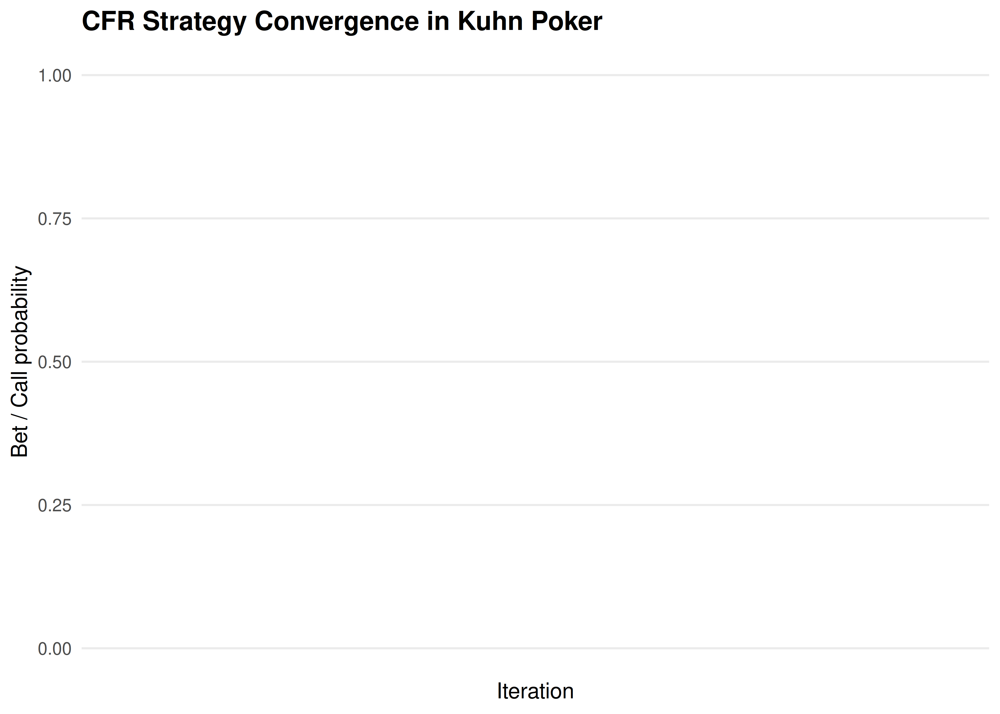
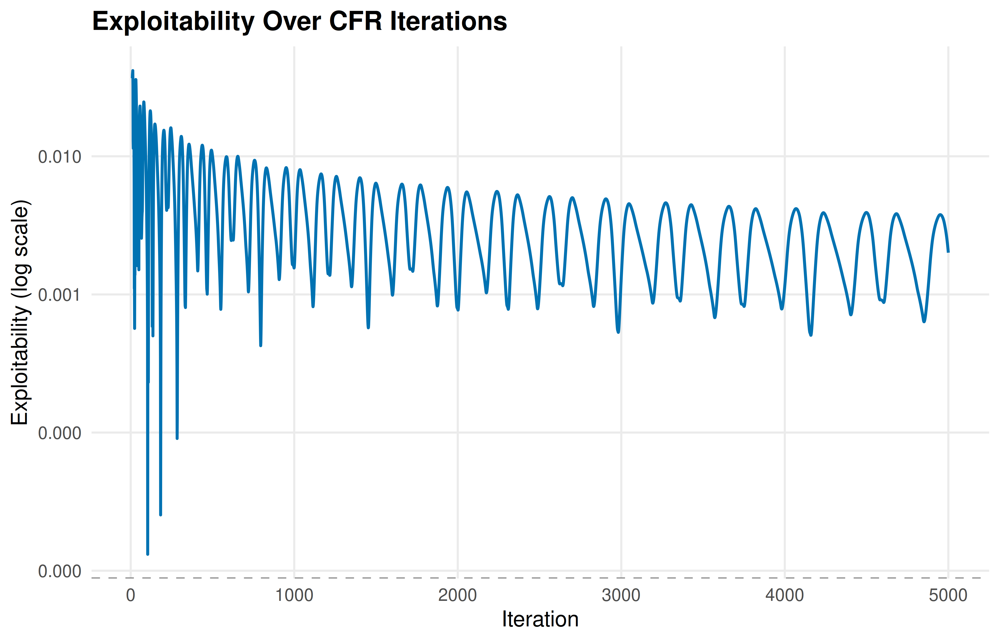

29 CFR and Poker
Counterfactual regret minimization for imperfect information games: information sets, regret matching, and a full Kuhn Poker implementation in R.
Learning objectives
- Distinguish perfect and imperfect information games and define information sets.
- Implement the regret matching algorithm from scratch in base R.
- Code the full CFR algorithm for Kuhn Poker and interpret the converged strategies.
- Evaluate convergence by tracking exploitability over iterations.
29.1 Motivation
Poker is the canonical imperfect information game: players hold private cards invisible to opponents, and optimal play requires mixing (randomizing) over actions. Unlike chess or Go, where a single deterministic strategy can be optimal, poker demands behavioral strategies — probability distributions over actions at each decision point.
In 2015, heads-up limit Texas Hold’em was essentially solved using CFR variants (Bowling et al., 2015), and in 2019 Pluribus defeated elite human professionals in six-player no-limit Hold’em (Brown & Sandholm, 2019). The engine behind these achievements is Counterfactual Regret Minimization (CFR), introduced by Zinkevich et al. (2007). This chapter builds CFR from first principles and implements it for Kuhn Poker — a simplified poker game small enough to solve exactly.
29.2 Theory
29.2.1 Imperfect information and information sets
In perfect information games (chess, Go), every player observes the full game state. In imperfect information games, a player’s knowledge is captured by an information set — the set of game states that are indistinguishable to that player given what they have observed.
In poker, a player’s information set includes their private cards and the public betting history, but not the opponent’s cards. A behavioral strategy assigns a probability distribution over available actions at each information set.
29.2.2 Regret matching
Regret matching is a simple online learning algorithm. After \(T\) rounds, define the cumulative regret for action \(a\) as:
\[\begin{equation} R^T(a) = \sum_{t=1}^{T} \left[ u(a, s^t) - u(a^t, s^t) \right] \tag{29.1} \end{equation}\]
where \(u(a, s^t)\) is the payoff of playing action \(a\) when the opponent plays \(s^t\), and \(a^t\) is the action actually chosen at round \(t\). The regret matching strategy at round \(T+1\) is:
\[\begin{equation} \sigma^{T+1}(a) = \begin{cases} \frac{\max(0, R^T(a))}{\sum_{a'} \max(0, R^T(a'))} & \text{if } \sum_{a'} \max(0, R^T(a')) > 0 \\ \frac{1}{|\mathcal{A}|} & \text{otherwise} \end{cases} \tag{24.3} \end{equation}\]
The key theorem is that the average strategy \(\bar{\sigma}^T = \frac{1}{T}\sum_{t=1}^{T}\sigma^t\) converges to a Nash equilibrium in two-player zero-sum games.
29.2.3 CFR algorithm
CFR applies regret matching to every information set in a game tree. On each iteration:
- Traverse the game tree, computing counterfactual values — the expected utility of reaching each information set, weighted by the opponent’s probability of playing to reach it.
- Update cumulative regrets at each information set.
- Derive the next iteration’s strategy via regret matching.
- Accumulate strategies for averaging.
The counterfactual value for player \(i\) at information set \(I\) is:
\[\begin{equation} v_i(I) = \sum_{z \in Z_I} \pi_{-i}(z) \cdot \pi_i(z[I] \to z) \cdot u_i(z) \tag{29.2} \end{equation}\]
where \(Z_I\) is the set of terminal states reachable from \(I\), \(\pi_{-i}(z)\) is the opponent’s contribution to reaching \(z\), and \(u_i(z)\) is the terminal payoff.
29.2.4 Kuhn Poker
Kuhn Poker (Kuhn, 1950) uses three cards (J, Q, K) dealt one to each of two players. Each player antes 1 chip. Player 1 acts first: check or bet (1 chip). Player 2 responds: after a check, they may check (showdown) or bet; after a bet, they may fold or call. If Player 1 checked and Player 2 bets, Player 1 may fold or call. The higher card wins at showdown.
The game has 12 information sets (6 per player: 3 cards times 2 possible histories at each decision point). The Nash equilibrium is a mixed strategy with a known analytical form.
29.3 Implementation in R
29.3.2 Kuhn Poker CFR
kuhn_cfr <- function(n_iterations = 10000, snapshot_every = 0) {
cards <- c("J", "Q", "K")
n_actions <- 2
cumulative_regret <- list()
cumulative_strategy <- list()
snapshots <- if (snapshot_every > 0) {
tibble(iteration = integer(), info_set = character(), bet_prob = double())
} else NULL
get_or_init <- function(store, key) {
if (is.null(store[[key]])) rep(0, n_actions) else store[[key]]
}
cfr_traverse <- function(deal, history, p0, p1) {
plays <- nchar(history)
player <- plays %% 2
card_player <- deal[player + 1]
card_opp <- deal[(1 - player) + 1]
higher <- which(cards == card_player) > which(cards == card_opp)
if (plays >= 2) {
last2 <- substr(history, plays - 1, plays)
if (last2 == "cc") return(if (higher) 1 else -1)
if (last2 == "bc") return(1)
if (last2 == "bb") return(if (higher) 2 else -2)
}
if (plays >= 3) {
last3 <- substr(history, plays - 2, plays)
if (last3 == "cbc") return(1)
if (last3 == "cbb") return(if (higher) 2 else -2)
}
info_set <- paste0(card_player, history)
regrets <- get_or_init(cumulative_regret, info_set)
strategy <- regret_match(regrets)
cum_strat <- get_or_init(cumulative_strategy, info_set)
action_values <- numeric(n_actions)
node_value <- 0
for (a in 1:n_actions) {
nh <- paste0(history, c("c", "b")[a])
if (player == 0) {
action_values[a] <- -cfr_traverse(deal, nh, p0 * strategy[a], p1)
} else {
action_values[a] <- -cfr_traverse(deal, nh, p0, p1 * strategy[a])
}
node_value <- node_value + strategy[a] * action_values[a]
}
reach_prob <- if (player == 0) p1 else p0
own_reach <- if (player == 0) p0 else p1
for (a in 1:n_actions) {
cumulative_regret[[info_set]][a] <<-
regrets[a] + reach_prob * (action_values[a] - node_value)
cumulative_strategy[[info_set]][a] <<-
cum_strat[a] + own_reach * strategy[a]
}
node_value
}
game_values <- numeric(n_iterations)
deals <- list(c("J","Q"), c("J","K"), c("Q","J"),
c("Q","K"), c("K","J"), c("K","Q"))
for (iter in seq_len(n_iterations)) {
val <- 0
for (deal in deals) val <- val + cfr_traverse(deal, "", 1, 1)
game_values[iter] <- val / length(deals)
if (snapshot_every > 0 && iter %% snapshot_every == 0) {
for (key in names(cumulative_strategy)) {
s <- cumulative_strategy[[key]]
total <- sum(s)
snapshots <<- bind_rows(snapshots,
tibble(iteration = iter, info_set = key,
bet_prob = if (total > 0) s[2] / total else 0.5))
}
}
}
avg_strategies <- list()
for (key in names(cumulative_strategy)) {
s <- cumulative_strategy[[key]]
total <- sum(s)
avg_strategies[[key]] <- if (total > 0) s / total else rep(0.5, n_actions)
}
list(avg_strategies = avg_strategies, game_values = game_values,
snapshots = snapshots)
}29.3.3 Run CFR
set.seed(42)
n_iter <- 5000
result <- kuhn_cfr(n_iterations = n_iter, snapshot_every = 25)29.3.4 Figure 1: Strategy convergence
snapshots <- result$snapshots
# Select key information sets for display
key_sets <- c("J" = "P1: J (open)",
"Q" = "P1: Q (open)",
"K" = "P1: K (open)",
"Jcb" = "P1: J (facing bet)",
"Qb" = "P2: Q (facing bet)",
"Kb" = "P2: K (facing bet)")
plot_data <- snapshots |>
filter(info_set %in% names(key_sets)) |>
mutate(label = key_sets[info_set])
p_conv <- ggplot(plot_data, aes(x = iteration, y = bet_prob,
colour = label)) +
geom_line(linewidth = 0.7, alpha = 0.8) +
scale_colour_manual(values = okabe_ito[1:6]) +
theme_publication() +
labs(title = "CFR Strategy Convergence in Kuhn Poker",
x = "Iteration", y = "Bet / Call probability",
colour = "Information set") +
ylim(0, 1)
p_conv
Figure 29.1: Strategy convergence in Kuhn Poker CFR. Action probabilities at key information sets stabilize to the Nash equilibrium strategy over iterations. Player 1 with a Jack learns to bluff approximately one-third of the time.
save_pub_fig(p_conv, "cfr-strategy-convergence", width = 7, height = 5)29.3.5 Figure 2: Exploitability
# Compute exploitability as absolute deviation from known NE game value
# Kuhn Poker NE value for Player 1 = -1/18
ne_value <- -1/18
exploit_data <- tibble(
iteration = seq_len(n_iter),
game_value = result$game_values
) |>
mutate(
cumulative_avg = cumsum(game_value) / iteration,
exploitability = abs(cumulative_avg - ne_value)
) |>
filter(iteration >= 10)
p_exploit <- ggplot(exploit_data, aes(x = iteration, y = exploitability)) +
geom_line(colour = okabe_ito[5], linewidth = 0.7) +
geom_hline(yintercept = 0, linetype = "dashed", colour = "grey50") +
scale_y_log10(labels = label_number(accuracy = 0.001)) +
theme_publication() +
labs(title = "Exploitability Over CFR Iterations",
x = "Iteration", y = "Exploitability (log scale)")
p_exploit
Figure 29.2: Exploitability decreasing over CFR iterations. The average strategy converges toward a Nash equilibrium, with exploitability dropping toward zero at a rate of approximately O(1/sqrt(T)).
save_pub_fig(p_exploit, "cfr-exploitability", width = 7, height = 4.5)29.4 Worked example
Let us examine the converged average strategies from our CFR run.
cat("Converged Kuhn Poker strategies (bet/call probability):\n\n")#> Converged Kuhn Poker strategies (bet/call probability):#> Info Set Check/Fold Bet/Call#> ------------------------------------
for (key in sort(names(result$avg_strategies))) {
s <- result$avg_strategies[[key]]
cat(sprintf("%-12s %8.3f %8.3f\n", key, s[1], s[2]))
}#> J 0.785 0.215
#> Jb 1.000 0.000
#> Jc 0.657 0.343
#> Jcb 1.000 0.000
#> K 0.332 0.668
#> Kb 0.000 1.000
#> Kc 0.000 1.000
#> Kcb 0.000 1.000
#> Q 1.000 0.000
#> Qb 0.664 0.336
#> Qc 1.000 0.000
#> Qcb 0.443 0.557Interpreting the Nash equilibrium. The known Kuhn Poker NE has the following structure:
- Player 1 with King: Always bets (or bets with high probability). Having the best card, betting is dominant.
- Player 1 with Queen: Always checks. A Queen is a middling hand — betting risks getting called by a King and would only fold out a Jack that was going to lose anyway.
- Player 1 with Jack: Bluffs (bets) with probability \(\alpha \approx 1/3\). This makes Player 2 indifferent between calling and folding with a Queen.
- Player 2 with King facing a bet: Always calls. The King is the best possible hand.
- Player 2 with Jack facing a bet: Always folds. The Jack cannot beat any betting hand.
- Player 2 with Queen facing a bet: Calls with probability \(1/3\). This makes Player 1 indifferent between bluffing and checking with a Jack.
cat("\nComparison with analytical Nash equilibrium:\n")#>
#> Comparison with analytical Nash equilibrium:#> P1 Jack bluff rate: CFR = 0.215 (NE = 0.333)#> P1 King bet rate: CFR = 0.668 (NE = 1.000)#> P2 Queen call rate: CFR = 0.336 (NE = 0.333)
cat(sprintf("\nNE game value for P1: %.4f (analytical = %.4f)\n",
mean(result$game_values), ne_value))#>
#> NE game value for P1: -0.0576 (analytical = -0.0556)The CFR algorithm converges closely to the known analytical equilibrium. Player 1’s expected payoff is \(-1/18 \approx -0.056\) per hand — a slight disadvantage from acting first.
29.5 Extensions
- Monte Carlo CFR: For large games, external or outcome sampling reduces per-iteration cost by sampling only a subset of chance outcomes, trading variance for speed.
- CFR+: A variant by Tammelin that uses floor-to-zero regret updates and linear averaging, achieving faster convergence in practice (Bowling et al., 2015).
- Deep CFR: Combines CFR with neural networks to approximate strategies in games too large for tabular methods, as used in Pluribus (Brown & Sandholm, 2019).
- Multi-agent RL (27) covers alternative approaches like PSRO that also tackle imperfect information.
- Self-play (28) discusses the broader paradigm of learning by playing against oneself.
Exercises
Three-action Kuhn Poker. Extend the Kuhn Poker implementation to include a “raise” action (bet 2 chips instead of 1). How does the equilibrium change? Does Player 1’s bluffing frequency increase or decrease?
Regret matching convergence. Implement regret matching for Rock-Paper-Scissors against a fixed opponent who plays Rock 50%, Paper 30%, Scissors 20%. Plot the strategy evolution over 1000 rounds and verify convergence to the best response.
Iteration budget. Run CFR for Kuhn Poker with \(T \in \{100, 500, 1000, 5000, 10000\}\) iterations. Plot exploitability vs. iteration count on a log-log scale. Does the convergence rate match the theoretical \(O(1/\sqrt{T})\) bound?
Solutions appear in D.